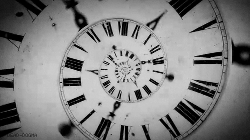

-
Chenonceau
Le solide
Un peu d'histoire
Chenonceau est construit, aménagé et transformé par des femmes très différentes de par leur tempérament. Il est édifié par Katherine Briçonnet en 1513, enrichi par Diane de Poitiers et agrandi sous Catherine de Médicis. Il devient un lieu de recueillement avec la reine blanche Louise de Lorraine, puis il est sauvegardé par Louise Dupin au cours de la Révolution française et enfin, métamorphosé par madame Pelouze. C'est ainsi qu'il est surnommé le château des Dames.
Catherine de Médicis
Catherine de Médicis est née le 13 avril 1519 à Florence et morte le 5 janvier 1589 à Blois (France). Elle grandit en Italie d'où elle est originaire par son père. À la mort de ses parents, elle hérite du titre de duchesse d'Urbino, puis de celui de comtesse d'Auvergne à la mort de sa tante Anne d'Auvergne en 1524. Par son mariage avec le futur Henri II, elle devient Dauphine et duchesse de Bretagne de 1536 à 1547, puis reine de France de 1547 à 1559. Elle gouverne la France en tant que reine-mère et régente de 1560 à 1563.
Horaires de visite
